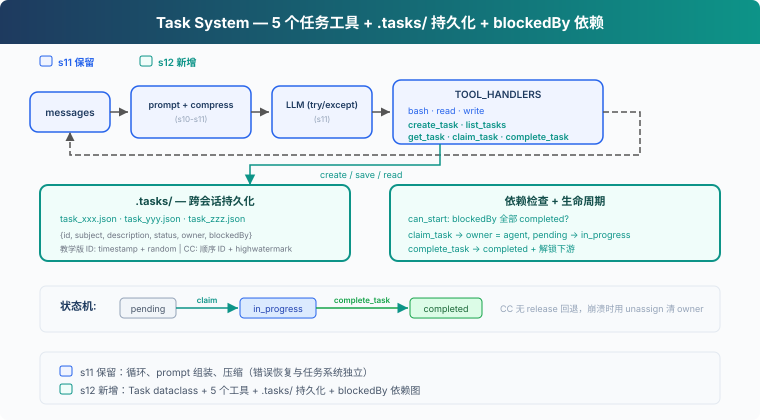
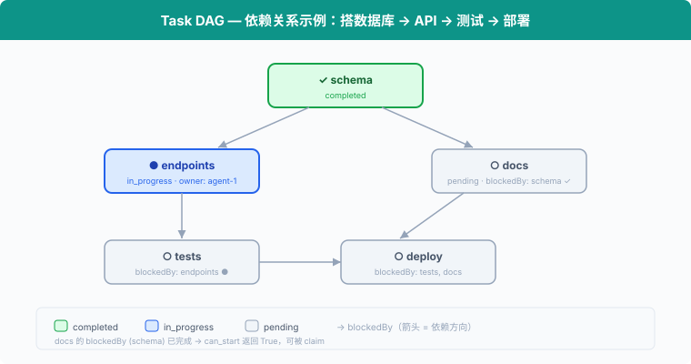

s12: Task System — 目标太大，拆成小任务
"大目标拆成小任务, 排好序, 持久化" — 文件持久化的任务图, 多 agent 协作的基础。 Harness 层: 任务 — 持久化的目标, 可恢复的进度。
On this page
s01 → ... → s10 → s11 → s12 → s13 → s14 → ... → s20
"大目标拆成小任务, 排好序, 持久化" — 文件持久化的任务图, 多 agent 协作的基础。
Harness 层: 任务 — 持久化的目标, 可恢复的进度。
问题
Agent 接到一个项目：搭数据库、写 API、加测试。它用 s05 的 TodoWrite 列了一张清单，然后开始写 API，写到一半发现没数据库表，回头补；加测试时发现 API 接口签名又变了...
盖房子不能先盖屋顶再打地基。任务之间有先后。任务依赖应该形成有向无环图（DAG）；教学版只演示 blockedBy 检查，没有实现环检测。
s05 的 TodoWrite 是当前任务的执行清单，保存在会话内存中。这里需要的是任务系统：每个任务是一个 JSON 文件，任务之间有 blockedBy 依赖，跨会话持久化在磁盘上。
解决方案

教学代码保留基础 agent loop，为聚焦任务系统省略了 S11 的完整错误恢复（RecoveryState、退避、升级、reactive compact、fallback model）。新增 5 个任务工具 + .tasks/ 目录持久化 + blockedBy 依赖检查。任务系统与错误恢复是独立层：CC 源码中 utils/tasks.ts 只管 CRUD，query.ts 的 with_retry/RecoveryState 管错误恢复，互不耦合。
TodoWrite vs Task System：
| TodoWrite (s05) | Task System (s12) | |
|---|---|---|
| 定位 | 当前任务的执行清单 | 可恢复的任务系统 |
| 存储 | 进程内 / 会话状态 | .tasks/{id}.json |
| 依赖 | 无 | blockedBy / blocks 依赖图 |
| 生命周期 | 当前会话 / 当前任务 | 跨会话保留 |
| 分工 | 不负责任务认领 | owner / claim |
| 状态 | pending / in_progress / completed | pending / in_progress / completed |
| 粒度 | Agent 自己的步骤 | 可被认领、追踪、解锁的任务 |
工作原理

Task: 数据结构
每个任务是一个 JSON 文件，存于 .tasks/ 目录：
@dataclass
class Task:
id: str
subject: str
description: str
status: str # pending | in_progress | completed
owner: str | None # Agent 名（多 Agent 场景）
blockedBy: list[str] # 依赖的任务 ID 列表
ID 用 timestamp + random hex 生成，简单但够用。CC 用顺序 ID + highwatermark 文件防止 ID 重用，是更严谨的设计。
create_task: 创建任务
def create_task(subject: str, description: str = "",
blockedBy: list[str] | None = None) -> Task:
task = Task(
id=f"task_{int(time.time())}_{random_hex(4)}",
subject=subject, description=description,
status="pending", owner=None,
blockedBy=blockedBy or [],
)
save_task(task)
return task
创建时自动 save_task 到 .tasks/{id}.json。blockedBy 声明依赖，比如 "写 API" 的 blockedBy 是 ["task_schema"]。
can_start: 依赖检查
一个任务只能在它的 blockedBy 全部 completed 之后才能开始：
def can_start(task_id: str) -> bool:
task = load_task(task_id)
for dep_id in task.blockedBy:
if not _task_path(dep_id).exists():
return False # missing dependency = blocked
dep = load_task(dep_id)
if dep.status != "completed":
return False
return True
can_start 是 claim_task 的前置检查：blockedBy 里有任何一个不是 completed，就不能认领。不存在的依赖视为 blocked，避免引用错误 ID 时崩溃。
claim_task: 认领任务
Agent 开始做一个任务时，调用 claim_task：设置 owner，状态从 pending → in_progress。owner 字段记录谁在做这个任务，多 Agent 场景下防止重复认领：
def claim_task(task_id: str, owner: str = "agent") -> str:
task = load_task(task_id)
if task.status != "pending":
return f"Task {task_id} is {task.status}, cannot claim"
if not can_start(task_id):
deps = [d for d in task.blockedBy
if load_task(d).status != "completed"]
return f"Blocked by: {deps}"
task.owner = owner
task.status = "in_progress"
save_task(task)
return f"Claimed {task_id} ({task.subject})"
如果任务已被别人认领（status != "pending"），或者依赖没完成（can_start 返回 False），拒绝认领。
complete_task: 完成与解锁
任务做完后，设为 completed。同时扫描所有其他任务，找出刚刚被解锁的下游任务：
def complete_task(task_id: str) -> str:
task = load_task(task_id)
task.status = "completed"
save_task(task)
# 找出被解锁的下游任务
unblocked = [t.subject for t in list_tasks()
if t.status == "pending" and t.blockedBy
and can_start(t.id)]
msg = f"Completed {task_id} ({task.subject})"
if unblocked:
msg += f"\nUnblocked: {', '.join(unblocked)}"
return msg
完成 "schema" 后，"endpoints" 和 "docs" 的 can_start 返回 True，它们可以开始。
get_task: 查看完整细节
list_tasks 只显示一行摘要。get_task 返回完整的任务 JSON，包括 description 和依赖细节。跨会话恢复时，Agent 需要读取完整描述才能继续工作：
def get_task(task_id: str) -> str:
task = load_task(task_id)
return json.dumps(asdict(task), indent=2)
状态机: 两个动作，三个状态
pending ──claim──→ in_progress ──complete──→ completed
这里的 claim / complete 是动作，pending / in_progress / completed 是状态：
- claim_task:
pending→in_progress。设置 owner，开始工作。 - complete_task:
in_progress→completed。把任务标记为完成，并解锁下游。
CC 没有 in_progress → pending 的 release 路径。如果 teammate 终止或 shutdown，CC 会把它未完成的任务 unassign（清除 owner），并将 status 重置为 pending，方便其他 agent 重新认领。教学版省略了这一恢复路径。
合起来跑
# 创建有依赖的任务
schema = create_task("setup database schema")
endpoints = create_task("create API endpoints", blockedBy=[schema.id])
tests = create_task("write tests", blockedBy=[endpoints.id])
docs = create_task("write docs", blockedBy=[schema.id])
# Agent 认领第一个可做的任务
claim_task(schema.id) # ✓ Claimed (无依赖)
complete_task(schema.id) # ✓ Completed → 解锁 endpoints, docs
claim_task(endpoints.id) # ✓ Claimed (schema 已完成)
complete_task(endpoints.id) # ✓ Completed → 解锁 tests
claim_task(docs.id) # ✓ Claimed (schema 已完成)
complete_task(docs.id) # ✓ Completed
claim_task(tests.id) # ✓ Claimed (endpoints 已完成)
complete_task(tests.id) # ✓ Completed
每个 create_task 写一个 JSON 文件，每个 claim_task / complete_task 更新文件。跨会话时，.tasks/ 目录还在，Agent 读文件就能恢复进度。
相对 s11 的变更
| 组件 | 之前 (s11) | 之后 (s12) |
|---|---|---|
| 任务管理 | 无 | Task dataclass + 5 个工具 |
| 新类型 | — | Task（id, subject, description, status, owner, blockedBy） |
| 存储 | 无持久化 | .tasks/{id}.json 跨会话 |
| 依赖 | 无 | blockedBy 图 + can_start 检查 |
| 工具 | bash, read_file, write_file (3) | + create_task, list_tasks, get_task, claim_task, complete_task (8) |
| 生命周期 | — | pending → in_progress → completed（无 release 回退） |
试一下
cd learn-claude-code
python s12_task_system/code.py
试试这些 prompt：
Create tasks: setup database schema, create API endpoints (depends on schema), write tests (depends on endpoints), write docs (depends on schema)List all tasks and their statusesClaim the first unblocked task and complete itList tasks again — which ones are now unblocked?
观察重点：.tasks/ 目录下是否生成了 JSON 文件？完成任务后，被阻塞的任务是否解锁？
接下来
任务图有了。但有些任务要跑很久——比如全量测试、部署到服务器。Agent 调 LLM 按量计费，不能干等一个慢操作。
s13 Background Tasks → 慢操作放后台。Agent 继续处理其他任务，后台跑完了通知它。